CREST: Candidate Generation and Motion-Aware Refinement with Quality-Estimated Set Selection for Aircraft Trajectory Prediction
Under review, CVPR 2027. CVPR 2027，在审。
I received the B.S. degree in Optoelectronic Information Science and Engineering from Northwest A&F University in 2025. During my undergraduate studies, I was advised by Prof. Erliang Cui.
我于2025年获得西北农林科技大学光电信息科学与工程专业理学学士学位。本科期间师从 崔二亮教授。
I am currently pursuing the M.S. degree in Electronic Information at the College of Optical Science and Engineering, Zhejiang University, under the supervision of Prof. Dong Liu.
目前，我在浙江大学光电科学与工程学院攻读电子信息专业硕士学位，导师为 刘东教授。
My research interests include trajectory prediction, deep learning, and computer vision.
我的研究兴趣包括轨迹预测、深度学习与计算机视觉。
M.S. @ Zhejiang University, 2025–2028 (expected)
硕士 @ 浙江大学，2025–2028（预计）
Electronic Information, College of Optical Science and Engineering
电子信息，光电科学与工程学院
Advisor: Prof. Dong Liu
导师： 刘东教授
B.S. @ Northwest A&F University, 2021–2025
学士 @ 西北农林科技大学，2021–2025
Optoelectronic Information Science and Engineering, College of Science
光电信息科学与工程，理学院
Advisor: Prof. Erliang Cui
导师： 崔二亮教授
Under review, CVPR 2027. CVPR 2027，在审。
Applied Optics, 65(6), 1736–1744 (2026).
Under review, IEEE Transactions on Intelligent Transportation Systems. IEEE Transactions on Intelligent Transportation Systems，在审。
Student filmmaking
学生影像创作
I played the male lead, Itsuki Fujii, in a production of Love Letter created by students from the Department of Media.
参演传媒系同学创作的《情书》，饰演男主藤井树，第一次走进较为专业的拍摄现场。
Playing Itsuki Fujii took me well beyond my familiar life as an engineering student. Watching a film and standing in front of a camera turned out to be very different experiences. Making a gesture or a pause feel natural was a challenge in itself, and stepping into a character asked for a kind of attention I had rarely used before.
This was my first experience of a more professional filming process. Being on set gave me a much clearer understanding of the work behind a finished scene and a deeper appreciation of the patience and coordination that filmmaking requires.
Just as memorable was the time spent with the student crew. Working together was genuinely enjoyable. I came away with new respect for their craft, and with the pleasure of having tried something far outside my usual field.
对一个习惯了课堂和实验室的工科生来说，饰演藤井树是一次很新鲜、也很有挑战的尝试。坐在银幕前看故事，与站在镜头前成为故事里的人，原来是两种完全不同的体验。一个动作、一处停顿，怎样才显得自然，都需要重新体会。
这是我第一次接触较为专业的拍摄过程。真正参与其中，才更清楚地感受到，一段看似平静流畅的画面背后，需要多少耐心、配合与投入。拍摄的不易也让我对演员和摄影团队的工作有了更具体、更深的认识。
和团队同学相处的过程非常愉快。大家一起完成一段影像，也一起留下了镜头之外的记忆。能够暂时走出熟悉的专业，认真尝试另一种创作，本身就很值得。
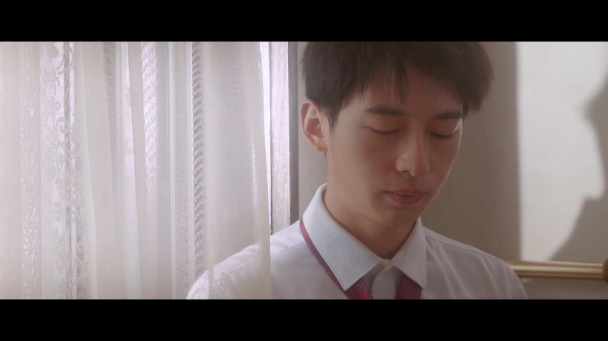
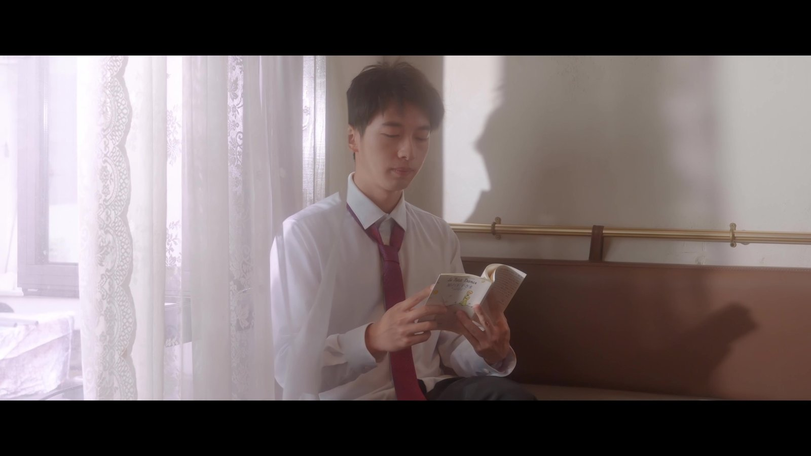
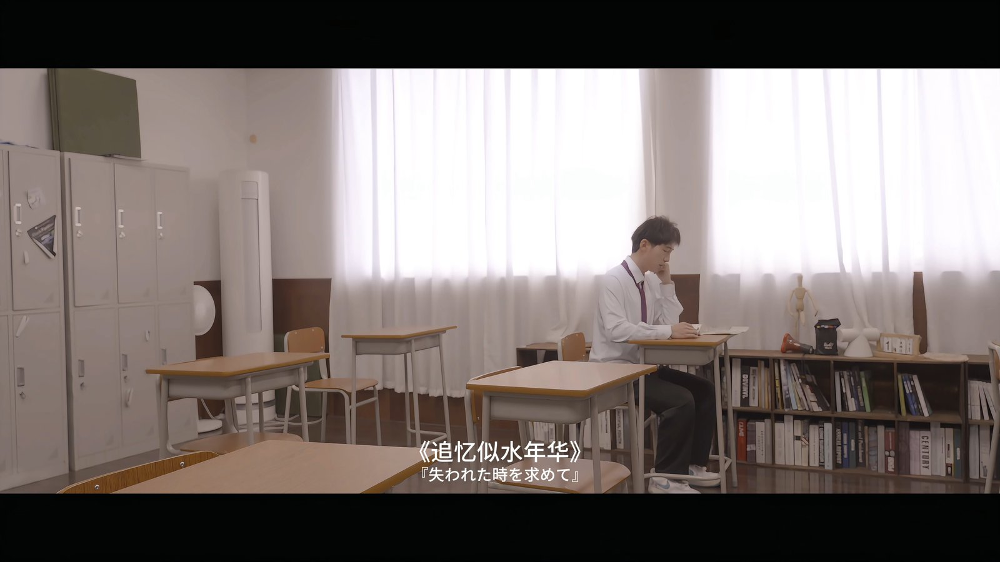
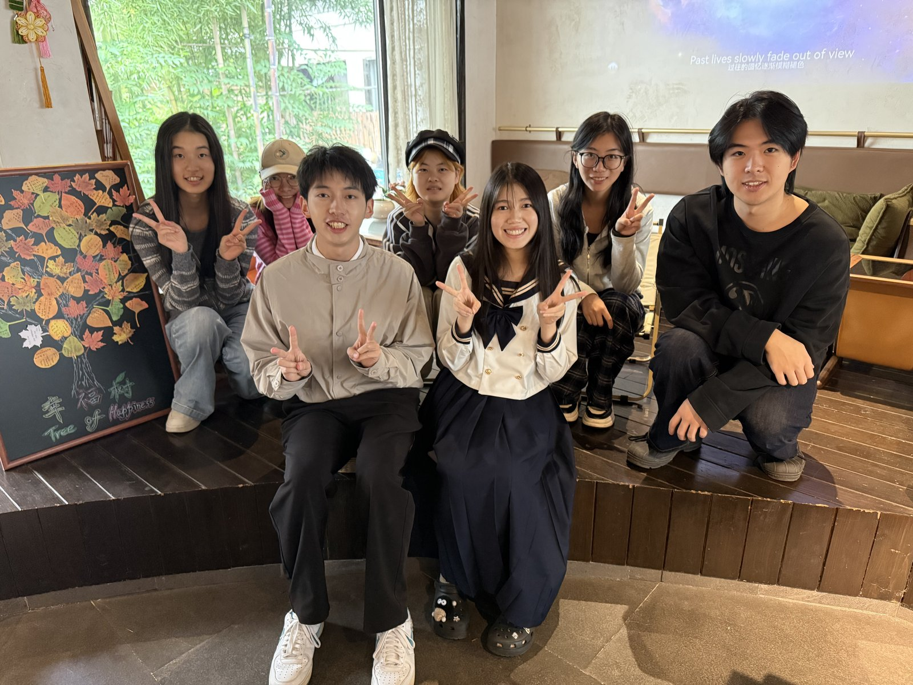
Ballroom dancing
交谊舞
Ballroom dancing opened up an unexpected new interest, bringing music, movement, and shared rhythm into my life beyond engineering.
从熟悉的工科日常走进舞池，在音乐、舞步与配合中发现一项意想不到的新兴趣。
Ballroom dancing had rarely been part of the world I knew as an engineering student. Joining a dance evening made that world feel suddenly larger. There was the music, the movement, and the simple pleasure of finding a rhythm with another person.
What appealed to me was the way dancing draws attention into the present: listening, moving, and responding to a partner. It offered a very different kind of enjoyment from my usual routine, and made me curious about an interest I had scarcely considered before.
These photographs keep a few moments from the dance floor. More than anything, they remind me how much there still is to try. Sometimes a new interest begins with a small surprise: I had no idea this could be so much fun.
在我熟悉的工科生活圈里，跳舞并不是一件经常被谈起的事。真正参加舞会之后，才发现音乐、舞步和两个人之间的配合，能够带来如此直接的快乐。原本觉得离自己很远的世界，一下子变得可以亲身参与。
交谊舞吸引我的地方，是它让人把注意力放回当下：听音乐，感受节奏，留意舞伴，再一起完成动作。这样的体验与平时的学习科研很不一样，也一下子拓宽了我的兴趣面。
这里留下的是舞会中的几个片段。比起跳得如何，我更珍惜那种发现新鲜事物的兴奋——原来生活里还有这么有意思的事情，值得自己走近一点，再试一次。
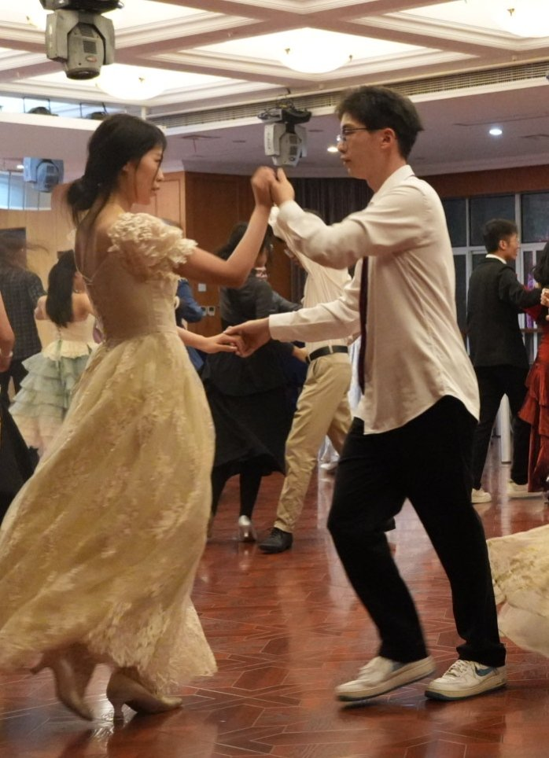
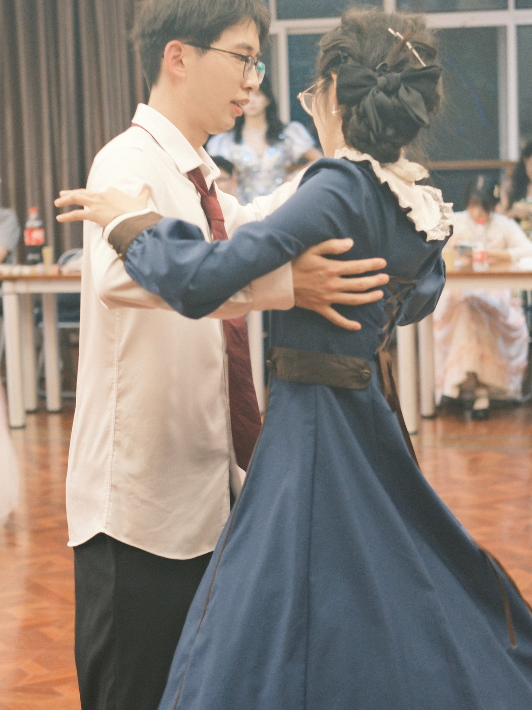
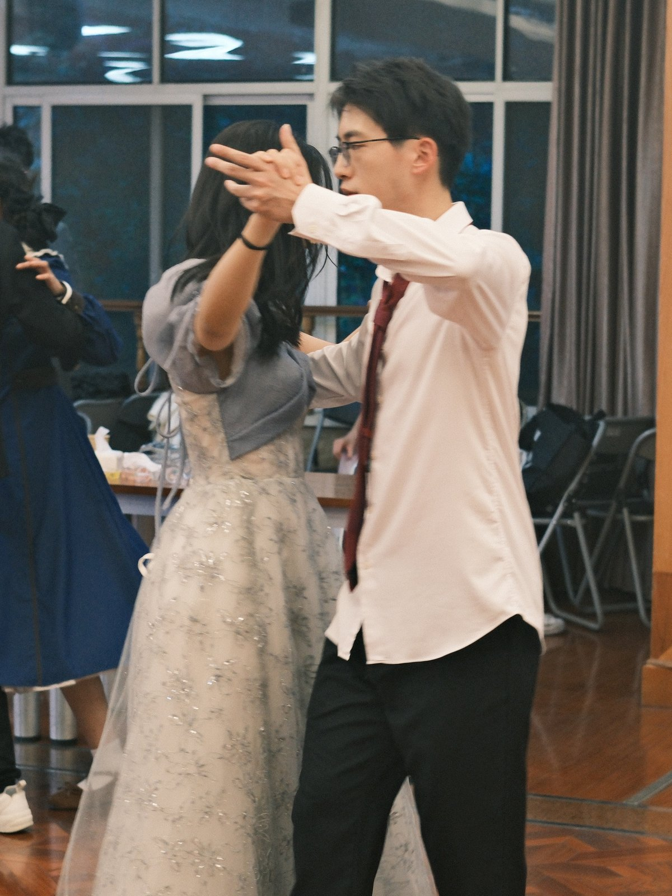
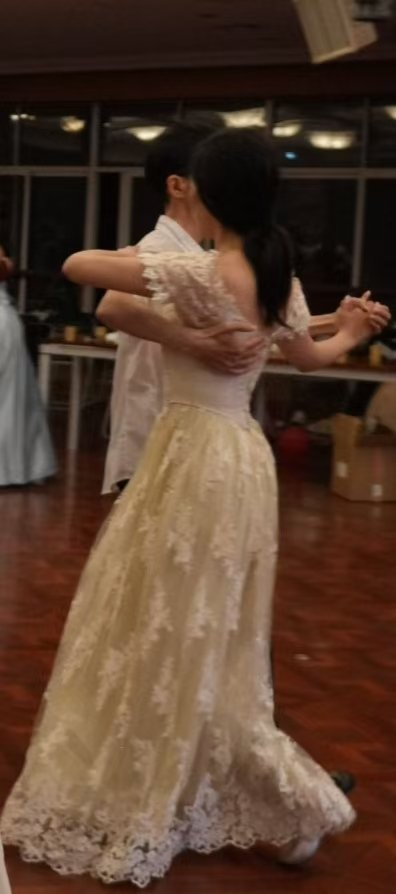
Hangzhou
杭州
I organized a National Day holiday hike with friends and classmates, exploring Jiuyao and Yuhuang Hills and enjoying the scenery together.
国庆期间，约上平时的朋友和同学一起走过九曜山、玉皇山，沿途赏景，合影留念。
For the National Day holiday, I brought together a group of friends and classmates for a hike through Jiuyao and Yuhuang Hills. People I usually met on campus became companions on the trail, sharing a day of walking and views across Hangzhou.
The scenery gave us plenty of reasons to pause. So did the pleasure of being together somewhere outside our ordinary routines. We stopped for photographs along the way, keeping a record of both the landscape and the people who made the day memorable.
Looking back, the best part was how simple it all was: gathering a few familiar faces, choosing a route, and setting out. A shared walk turned an ordinary holiday into a memory that now belongs to all of us.
趁着国庆假期，我组织了几位平时一起相处的朋友和同学，去九曜山、玉皇山走一走。熟悉的人从校园来到山路上，换一个场景相处，连平常的闲聊也多了几分轻松。
一路看风景，也一路留下合影。山林与远处的城市让人愿意放慢脚步，而有人同行，又让这段路多了许多值得记住的片刻。照片里留下的不只是到过哪里，还有那天一起出发、一起走过的人。
回头看，最喜欢的恰恰是这件事的简单：约上几个熟悉的人，选一条路，就能够拥有一个不同于日常的假日。山路走完了，那份共同经历的快乐却留了下来。
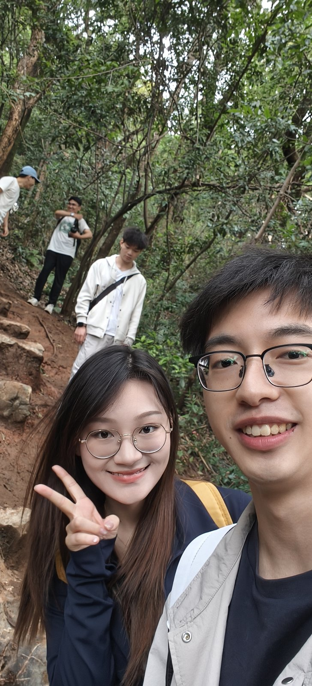
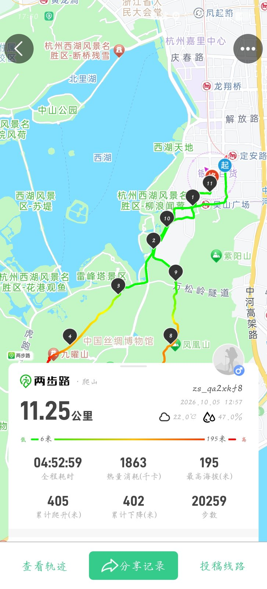
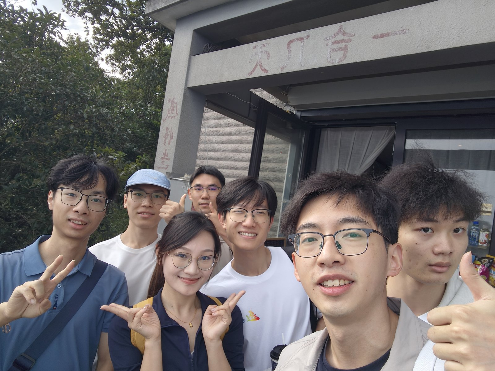
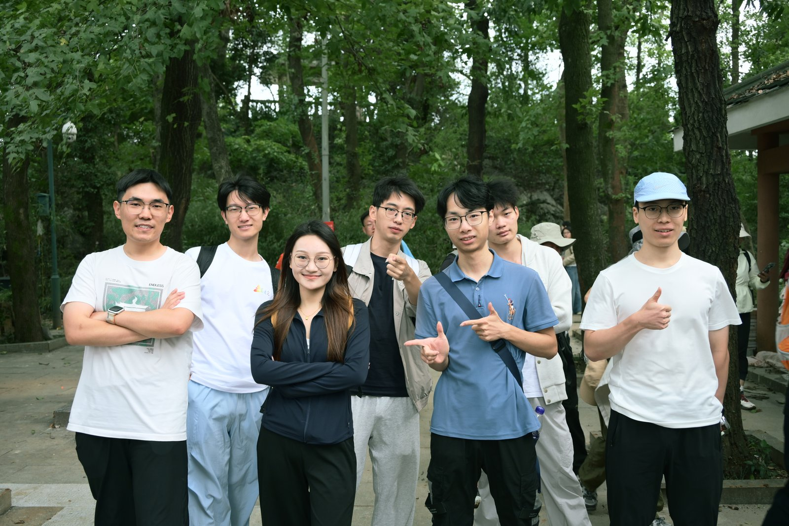
Festival market
节日集市
A lively Mid-Autumn market brought lanterns, folk traditions, and the warmth of a shared celebration vividly to life.
在灯火、人声与传统民俗之间，遇见一个几乎从梦里走出来的中秋。
Walking into the Mid-Autumn market felt like entering a scene I had imagined long before seeing it. Lanterns glowed among the trees, lights shimmered on the water, and the streets were full of people. The liveliness of it all was unexpectedly moving.
Here, a traditional festival was something I could experience with all my senses. The folk customs, the gathering crowds, and the shared excitement gave the celebration a warmth that felt wonderfully real. For a moment, I found myself close to tears.
What stayed with me was the feeling that a dreamlike image of the festival had become tangible. I could walk through it, stand among the lights, and be part of the evening. These photographs hold a little of that atmosphere.
走进中秋集市时，有一种梦中场景突然落到眼前的恍惚。树间的灯笼、水面的光影、街巷里来往的人群，把热闹连成了一片。原来心里一直向往的节日，可以这样具体地出现在现实里。
最打动我的，是传统民俗与人间烟火真正融在一起的感觉。身处其中，节日不再只是日历上的一个名字，而是能够看见、听见、亲身参与的相聚。那一刻甚至有些热泪盈眶：这就是我想象过的中秋氛围。
我把这一晚记作一次梦境的具象化。那些原本只能想象的灯火与欢腾，终于有了可以走进去的街道，也留下了属于自己的体验和记忆。
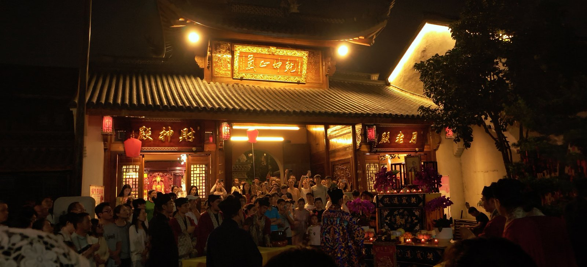
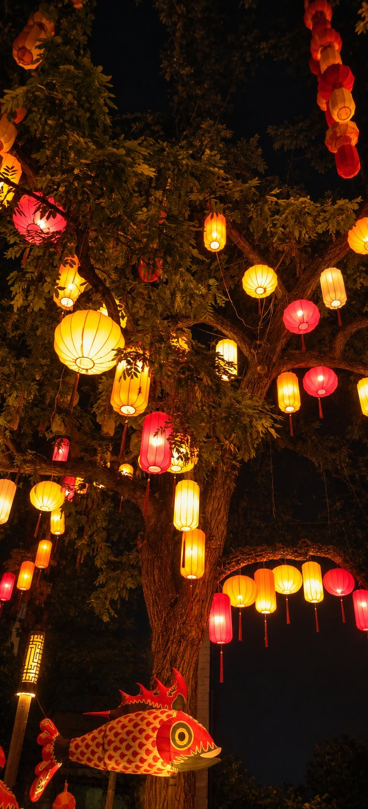
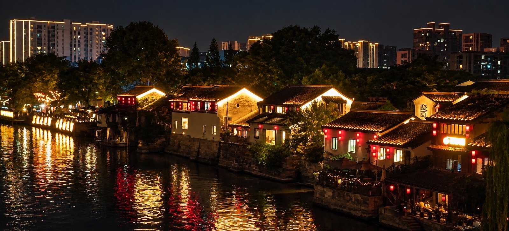
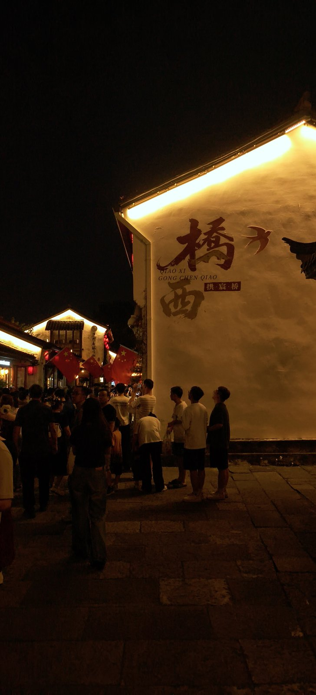
Tingpang, Sanmen
三门亭旁
I served as secretary of the practice team and coordinated the Tingpang group’s fieldwork, schedules, and team activities.
担任实践团书记，负责亭旁组调研、行程及团队活动的统筹协调。
Our group investigated Tingpang’s specialty agriculture and the local history of the “First Red Flag in Zhejiang.” We also took part in a team debate and won first place. The experience moved learning and public service beyond the campus: working at the grassroots level required us to listen carefully, coordinate different needs, and turn plans into concrete action.
As team secretary, I worked across schedules, task assignments, communications, and on-site coordination to keep different activities moving together. The debate result was encouraging, but the more lasting value came from seeing how local history, agricultural development, and community life intersect in everyday governance. The experience strengthened my ability to organize a team, respond to practical challenges, and collaborate with people from different backgrounds.
More importantly, it reminded me that meaningful learning is grounded in real communities. By engaging directly with local development and revolutionary history, I gained a clearer understanding of social responsibility and grew through service, cooperation, and reflection.
我们围绕亭旁镇精品农业和“浙江红旗第一飘”等主题开展调研，并在实践团辩论赛中取得第一名。走出校园、深入基层，使我更加真切地认识到：服务基层既要认真倾听各方诉求，也要协调不同需要，并将计划落实为具体行动。
作为实践团书记，我负责行程安排、任务分工、沟通联络与现场协调，推动各项工作有序衔接。比比赛成绩更珍贵的，是在实地走访中理解地方历史、农业发展与社区治理之间的联系。这段经历提升了我的组织协调、团队协作和应对实际问题的能力。
更重要的是，这次实践让我认识到，有意义的学习应当扎根真实社会。通过接触基层发展与红色历史，我进一步增强了社会责任意识，也在服务、合作与反思中锻炼了自我。
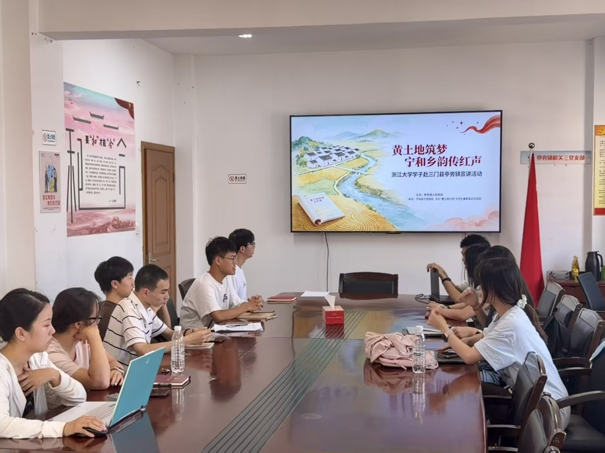
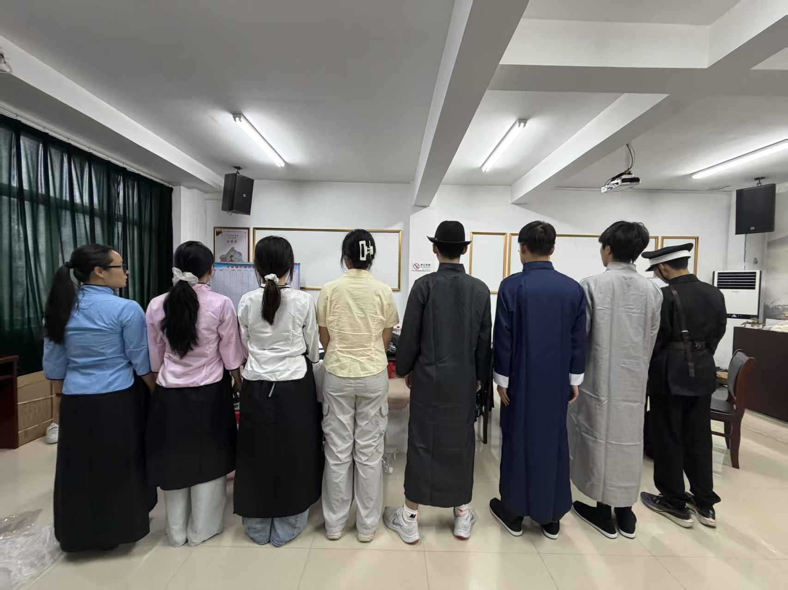
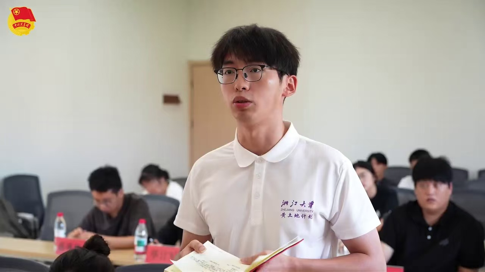
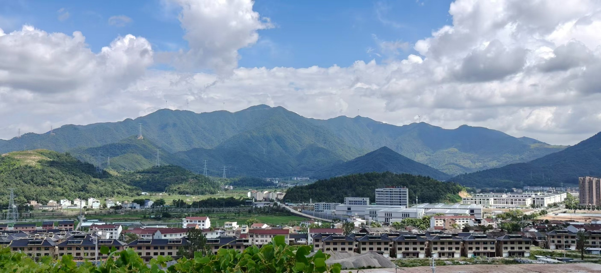
Zhejiang University
浙江大学
I was honored as a 2026 Outstanding Communist Party Member by the College of Optical Science and Engineering, Zhejiang University.
获评浙江大学光电科学与工程学院2026年“优秀共产党员”。
The certificate was issued by the CPC Committee of the College of Optical Science and Engineering on July 1, 2026. I regard this recognition not only as an affirmation, but also as a continuing responsibility to serve the community and lead by example through everyday action.
During my graduate studies, I have remained involved in student Party-building and collective service while pursuing my academic work. From coordinating routine responsibilities to supporting peers and contributing to group activities, I have tried to turn commitment into concrete and dependable work.
This honor reminds me that the meaning of Party membership lies less in a title than in stepping forward when needed, following through on ordinary responsibilities, and bringing the same integrity, discipline, and sense of duty to both research and public service.
证书由中共浙江大学光电科学与工程学院委员会于2026年7月1日颁发。对我而言，这份荣誉不仅是对阶段性表现的肯定，也意味着继续服务集体、在日常行动中发挥先锋模范作用的责任。
研究生阶段，我在推进学习科研的同时，持续参与学生党建与集体服务。从协调日常事务、服务身边同学到参与集体建设，我努力把责任和承诺落实为一项项具体、可靠的工作。
这份荣誉也提醒我，党员身份的意义并不在称号本身，而在需要时能否主动向前，对寻常职责能否一以贯之，并把同样的诚信、自律与担当带入科研和公共服务之中。
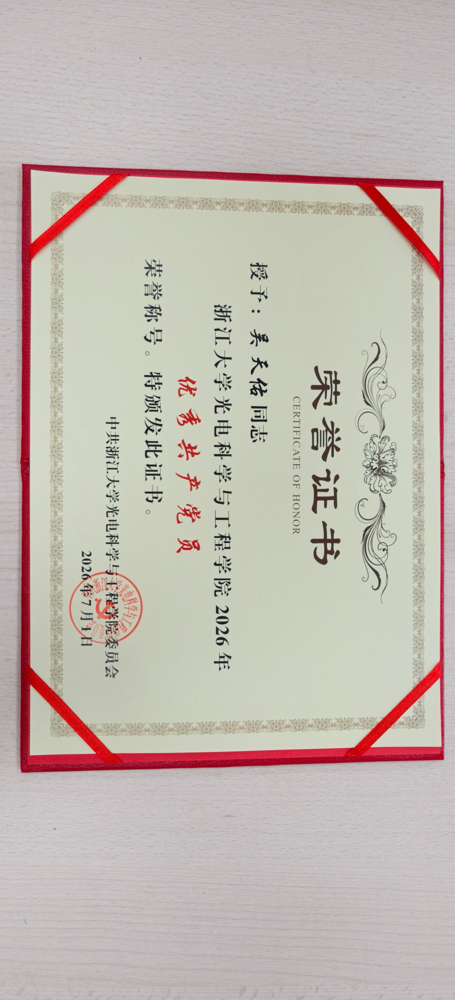
Hangzhou
杭州
I visited the 2026 China Academy of Art Graduation Exhibition, where an early-summer day in Hangzhou became a vivid encounter with imagination and beauty.
参观2026中国美术学院毕业展，在杭州初夏与想象力和美相遇。
Moving through paintings, illustrations, installations, and sculptures, I encountered not one fixed definition of beauty, but many intensely personal visual worlds. Familiar materials became strange and dreamlike; private memories, emotions, and imagined spaces were translated into forms that invited me to pause and look again.
The exhibition felt like an aesthetic carnival for the soul. Some works delighted at first sight, while others were unsettling or deliberately ambiguous. Together, they showed me that beauty is not limited to polish or symmetry. It can also lie in a new perspective, an honest emotion, or the courage to make an inner world visible.
As someone trained in engineering, I left with a renewed sense that precision and imagination are not opposites. Attentiveness to form, openness to uncertainty, and the ability to see beyond familiar patterns matter in both artistic creation and scientific research.
穿行于绘画、插画、装置与雕塑之间，我看到的并不是一种固定的“美”，而是许多个性鲜明的视觉世界。熟悉的材料被重组为陌生而梦幻的场景，私人记忆、细微情绪与想象空间被转化为可见的形式，让人不由自主地停下脚步，再看一眼。
这场毕业展像一场独属灵魂的审美狂欢。有些作品令人一见倾心，有些则保留着不安与暧昧；它们共同提醒我，美并不只存在于精致与对称之中，也可能来自一种新的观看方式、一份诚实的情感，或将内心世界呈现出来的勇气。
作为一名工科学生，我也重新体会到，精确与想象并非对立。对形式的敏感、对不确定性的开放，以及跳出惯常模式的观察力，无论对艺术创作还是科学研究都同样重要。
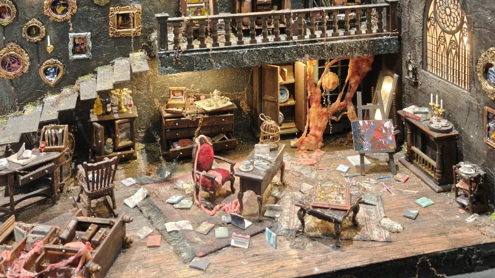
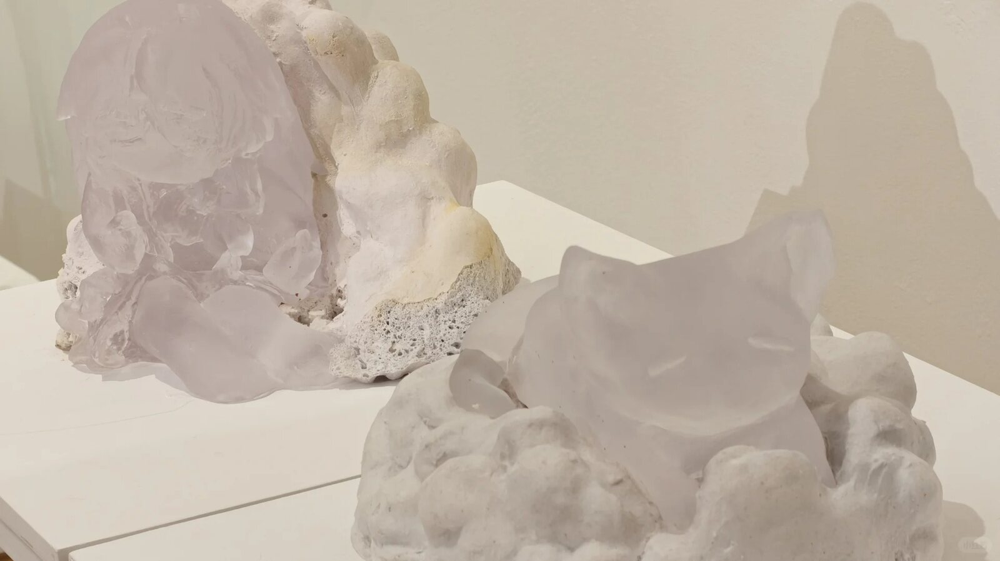
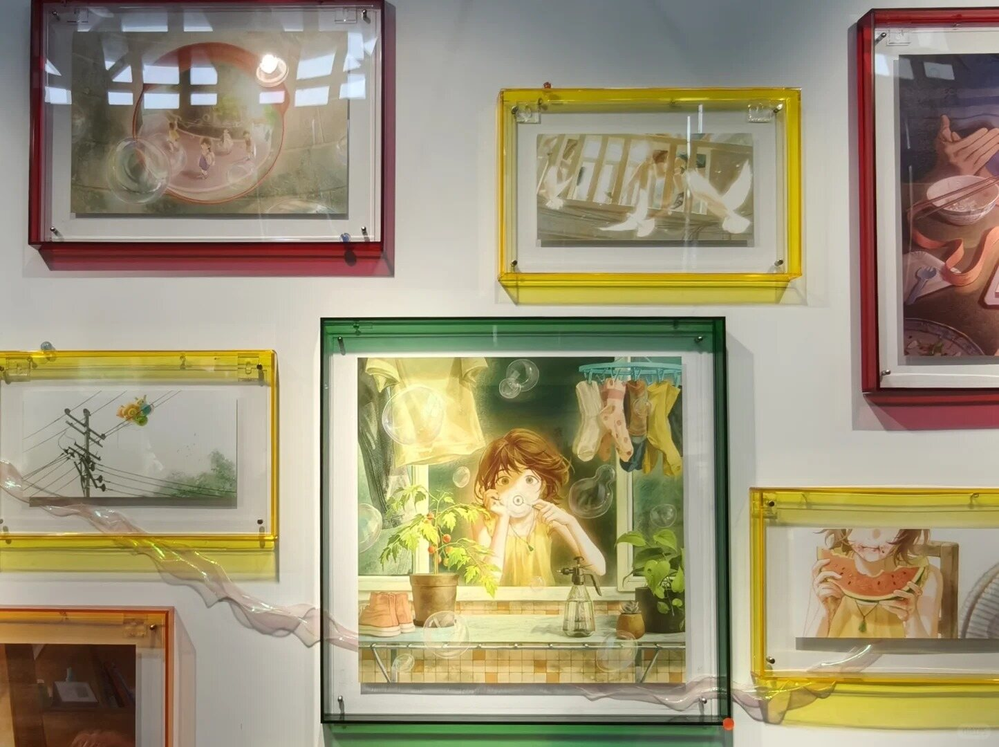
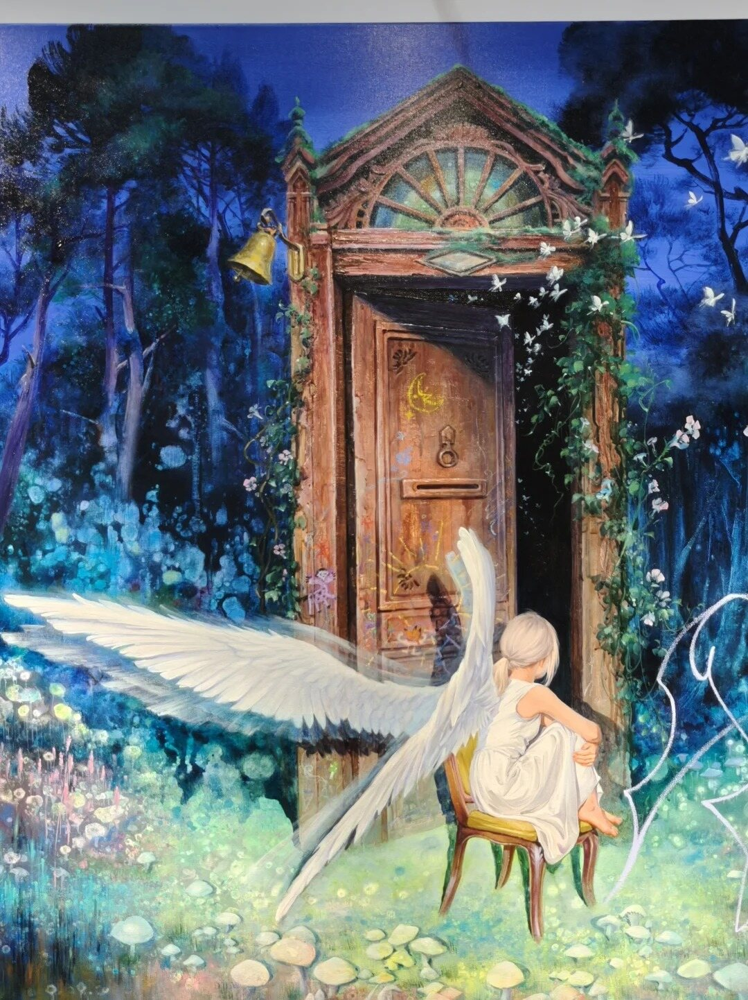
Hangzhou
杭州
I completed a 22.9-kilometer spring hike across Hangzhou, trading the usual campus routine for nearly eight hours of mountain paths and city views.
完成22.9公里春季毅行，用近八小时走过山路与城市风景。
The route connected campus, wooded hills, distant skylines, and views across West Lake. Places that usually appeared as names on a map gradually became slopes, turns, stretches of shade, and changing horizons. Walking made the city feel both larger and more intimate.
Over 22.9 kilometers, 38,617 steps, and nearly eight hours, there were steep climbs and long stretches when the finish still felt far away. The day became an exercise in pacing: moving steadily, adjusting when tired, and allowing small milestones to carry me toward the next one.
Reaching the end brought more than the satisfaction of a new personal best. The hike offered a slower way to experience Hangzhou and a reminder that endurance is rarely dramatic. It is built through ordinary steps, repeated patiently until they become a journey.
路线串联起校园、林木掩映的山岭、远处的城市天际线与西湖风景。地图上熟悉的地名，在脚步中逐渐变成坡度、转弯、树荫与不断变化的地平线。以步行的方式重新认识杭州，城市显得更加辽阔，也更加亲近。
22.9公里、38,617步、近八小时的行程中，既有陡峭的上坡，也有终点仿佛仍在远方的漫长路段。这也是一次关于节奏的练习：保持稳定，在疲惫时及时调整，再用一个个小目标把自己带到下一程。
抵达终点带来的不只是刷新个人纪录的满足。毅行让我以更缓慢的方式感受杭州，也再次提醒我，耐力往往并不轰轰烈烈，而是由寻常的一步又一步耐心累积，最终连成一段完整的旅程。
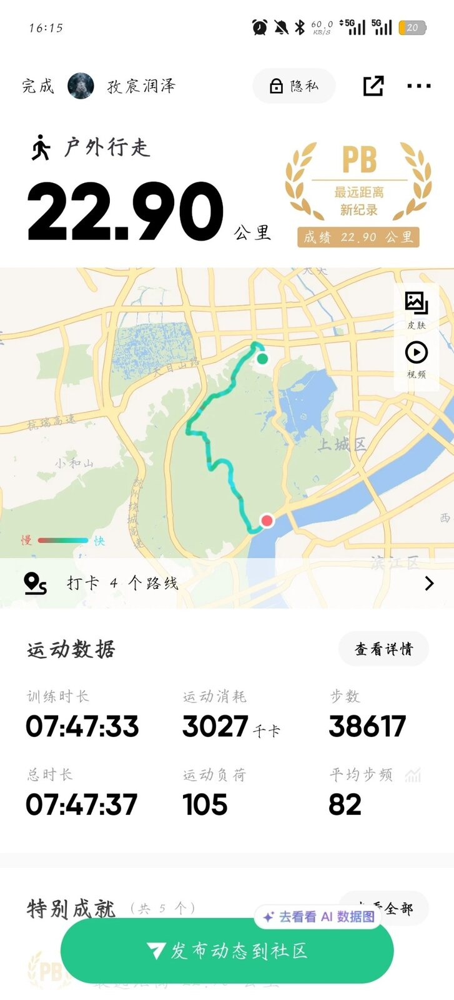
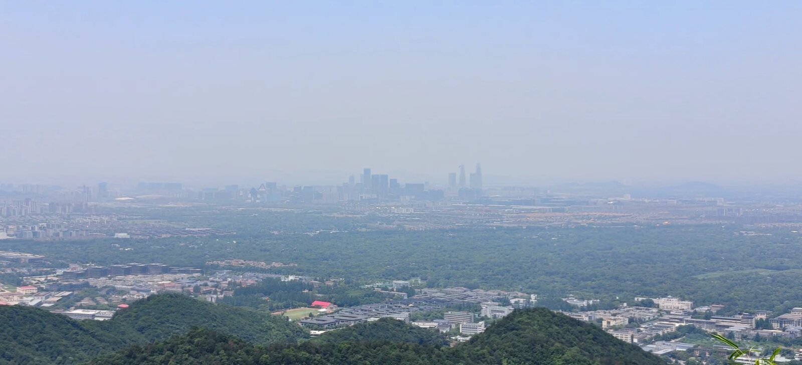
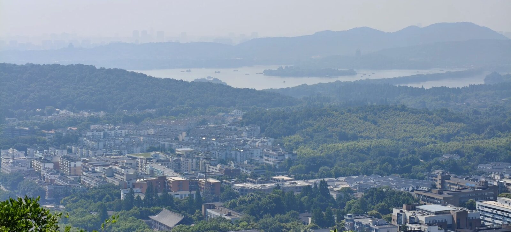
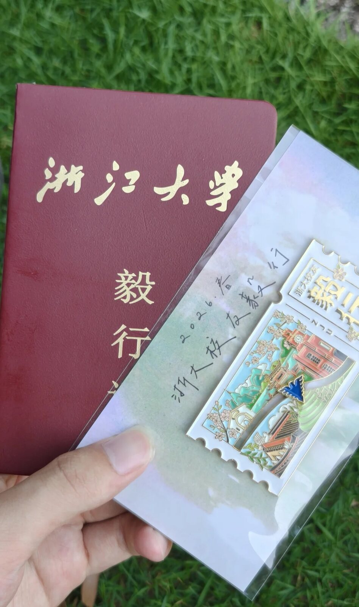